소방설비산업기사(기계) (2015-09-19 기출문제)
1과목: 소방원론
1. 다음 중 분진폭발을 일으키지 않는 물질은?
- 시멘트
- 알루미늄(Al)
- 석탄
- 마그네슘(Mg)
(정답률: 81%)

2. 건축물의 방화계획에서 공간적 대응에 해당되지 않는 것은?
- 대항성
- 회피성
- 도피성
- 피난성
(정답률: 55%)
3. 소화 분말 중 열분해로 인하여 부착성이 좋은 메타인산이 생성되어 A급 화재에도 탁월한 효과를 발하는 소화약제는?
- NH4H2PO4
- NaHCO3
- KHCO3
- Al2(SO4)3
(정답률: 79%)
4. 다음 중 황린의 연소 시에 주로 발생되는 물질은?
- P2O
- PO2
- P2O3
- P2O5
(정답률: 79%)
5. B급 화재에 해당하지 않는 것은?
- 목탄의 연소
- 등유의 연소
- 아마인유의 연소
- 알코올류의 연소
(정답률: 85%)
6. 다음 중 물을 무상으로 분무하여 고비점 유류의 화재를 소화할 때 소화효과를 높이기 위하여 물에 첨가하는 약제는?
- 증점제
- 침투제
- 유화제
- 강화액
(정답률: 64%)
7. 부피비로 메탄 80%, 에탄 15%, 프로판 4%, 부탄 1% 인 혼합기체가 있다. 이 기체의 공기 중 폭발하한계는 약 몇 vol% 인가? (단, 공기 중 단일 가스의 폭발하한계는 메탄 5vol%, 에탄 2vol%, 프로판 2vol%, 부탄 1.8vol% 이다.)
- 2.2
- 3.8
- 4.9
- 6.2
(정답률: 75%)
8. 자연발화를 방지하는 방법이 아닌 것은?
- 습도가 높은 곳을 피한다.
- 저장실의 온도를 높인다.
- 통풍을 잘 시킨다.
- 열이 쌓이지 않게 퇴적방법에 주의한다.
(정답률: 82%)
9. 피난계단에 대한 설명으로 옳은 것은?
- 피난계단용 방화문은 을종방화문을 설치해도 무방하다.
- 계단실은 건축물의 다른 부분과 불연구조의 벽으로 구획한다.
- 옥외계단은 출입구외의 개구부로부터 1m 이상의 거리를 두어야 한다.
- 계단실의 벽에 면하는 부분의 마감만은 가연재도 허용된다.
(정답률: 48%)
10. 다음 중 제거소화법이 활용되기 가장 어려운 화재는?
- 산불화재
- 화학공정의 반응기 화재
- 컴퓨터 화재
- 상품 야적장의 화재
(정답률: 68%)
11. 주된 연소 형태가 표면연소인 가연물로만 나열된 것은?
- 숯, 목탄
- 석탄, 종이
- 나프탈렌, 파라핀
- 니트로셀룰로오스, 질화면
(정답률: 87%)
12. 다음 중 난연효과가 가장 큰 것은?
- 나트륨
- 칼슘
- 마그네슘
- 할로겐족 원소
(정답률: 75%)
13. 15℃의 물 10kg이 100℃의 수증기가 되가 위해서는 약 몇 kcal의 열량이 필요한가?
- 850
- 1650
- 5390
- 6240
(정답률: 64%)
14. 화재에 과한 일반적인 이론에 해당하지 않는 것은?
- 착화온도와 화재의 위험은 반비례한다.
- 인화점과 화재의 위험은 반비례한다.
- 인화점이 낮은 것은 착화온도가 높다.
- 온도가 높아지면 연소범위는 넓어진다.
(정답률: 58%)
15. 한계산소농도에 대한 설명으로 틀린 것은?
- 가연물의 종류, 소화약제의 종류와 관계없이 항상 일정한 값을 갖는다.
- 연소가 중단되는 산소의 한계농도이다.
- 한계산소농도는 질식소화와 관계가 있다.
- 소화에 필요한 이산화탄소소화약제의 양을 구할 때 사용될 수 있다.
(정답률: 78%)
16. 물의 소화작용과 가장 거리가 먼 것은?
- 증발잠열의 이용
- 질식 효과
- 에멀젼 효과
- 부촉매 효과
(정답률: 78%)
17. 금수성 물질이 아닌 것은?
- 칼륨
- 나트륨
- 알킬알루미늄
- 황린
(정답률: 77%)
18. 어떤 기체의 확산속도가 산소보다 4배 빠르다면 이 기체는 무엇으로 예상할 수 있는가?
- 질소
- 수소
- 암모니아
- 이산화탄소
(정답률: 70%)
19. 연기의 농도가 감광계수로 10 일 때의 상황으로 옳은 것은?
- 가시거리는 0.2~0.5m 이고 화재 최성기 때의 농도
- 가시거리는 5m 이고 어두운 것을 느낄 정도의 농도
- 가시거리는 20~30m 이고 연기감지기가 작동할 정도의 농도
- 가시거리는 10m 이고 출화실에서 연기가 분출할 때의 농도
(정답률: 69%)
20. 할로겐화합물 소화약제의 특징으로 옳지 않은 것은?
- 부식성이 크다.
- 소화속도가 빠르다.
- 전기절연성이 높다.
- 가연물과 산소의 화학반응을 억제한다.
(정답률: 66%)
2과목: 소방유체역학
21. 온도 200℃, 압력 500kPa, 비체적 0.6m3/kg 의 산소가 정압하에서 비체적이 0.4 m3/kg으로 되었다면, 변화 후의 온도는 약 몇 ℃인가?
- 42
- 55
- 315
- 437
(정답률: 31%)
22. 이상기체의 엔탈피가 변하지 않는 과정은?
- 가역단열과정
- 비가역단열과정
- 정압과정
- 교축과정
(정답률: 47%)
23. 관지름 d, 관마찰계수 f, 부차손실계수 K인 관의 상당길이 Le는?
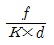
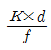
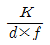
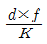
(정답률: 75%)
24. 어떤 원심펌프의 회전수와 유량을 각각 50% 증가시킬 때 양정이 10% 감소한다면 비속도는 대략 몇 배가 되는가?
- 1.2
- 1.5
- 2
- 2.5
(정답률: 43%)
25. 유체에서의 연속방정식과 관련이 없는 것은?
- A1V1=A2V2
- ρ1A1V1=ρ2A2V2
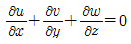
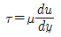
(정답률: 66%)
26. 지름이 d인 관에 물이 0.3m3/s의 유량으로 흐를 때 길이 500m에 대해서 손실수두가 17m 이다. 이때 관마찰계수가 0.011 이라면 관의 지름 d는 약 몇 cm 인가?
- 28
- 30
- 32
- 34
(정답률: 50%)
27. 물탱크에 연결된 마노미터의 눈금이 그림과 같을 때 점 A에서의 게이지압력은 몇 kPa인가? (단, 수은의 비중은 13.6이다.)
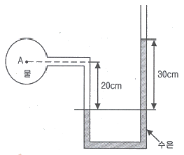
- 32
- 38
- 43
- 47
(정답률: 69%)
28. 펌프의 공동현상이 발생하는 원인으로 틀린 것은?
- 펌프가 물탱크보다 부적당하게 높게 설치되어 있을 때
- 펌프 흡입수두가 지나치게 클 때
- 펌프 회전수가 지나치게 높을 때
- 관내를 흐르는 물의 정압이 그 물의 온도에 해당하는 증기압보다 높을 때
(정답률: 64%)
29. 흐름이 있는 유체의 동압을 측정하기 위한 기구는?
- 노즐
- 오리피스관
- 벤튜리미터
- 피토정압관
(정답률: 63%)
30. 지름 250mm 인 원관으로부터 수평면과 45° 윗방향으로 분출하는 물제트의 유출속도가 9.8m/s라고 한다면 출구로부터 물제트의 최고 수직상승 높이는 몇 m 인가? (단, 공기의 저항은 무시한다.)
- 2.45
- 3
- 3.45
- 4.45
(정답률: 32%)
31. 모세관현상에 의한 액주 높이상승을 나타내는 식으로 옳은 것은? (단, β:접촉각, d:관경, σ:표면장력,
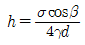
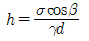
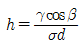
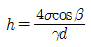
(정답률: 62%)
32. 비중이 0.4인 나무 조각을 물에 띄우면 전체적의 몇 %가 물 위로 떠오르는가?
- 30
- 40
- 50
- 60
(정답률: 56%)
33. 밀도가 1260kg/m3인 액체의 동점성계수가 1.19×10-3m2/s 이라면 점성계수는?
- 1.50×10-3 kg/mㆍs
- 0.147 kg/mㆍs
- 1.50 kg/mㆍs
- 14.7 kg/mㆍs
(정답률: 44%)
34. 펌프 양수량 0.6m3/min, 관로의 전손실수두 5.5m인 펌프가 펌프 중심으로부터 2.5m 아래에 있는 물을 펌프 중심으로부터 23m 위의 송출액면에 양수할 때 펌프에 공급해야 할 동력은 몇 kW 인가?
- 1.513
- 1.974
- 2.548
- 3.038
(정답률: 45%)
35. 크기가 50cm×100cm 인 250℃로 가열된 평판 위로 25℃의 공기를 불어준다고 할 때 대류, 열전달량은 몇 kW 인가? (단, 대류 열전달계수는 30W/m2℃ 이다.)
- 3.375
- 5.879
- 7.131
- 9.332
(정답률: 53%)
36. 밑면은 한변의 길이가 2m인 정사각형이고 높이가 4m인 직육면체 탱크에 비중이 0.8인 유체를 가득 채웠다. 유체에 의해 탱크의 한쪽 측면에 작용하는 힘은 약 몇 kN 인가?
- 125.44
- 169.2
- 178.4
- 186.2
(정답률: 54%)
37. 직경이 2cm 인 호스에 출구 직경이 1cm인 원뿔형 노즐이 연결되었고, 노즐을 통해서 600cm3/s의 물 (밀도 998kg/m3)이 수평방향으로 대기중에 분사되고 있다. 노즐 입구의 계기압력이 400kPa 일 때 노즐을 고정하기 위한 수평방향의 힘은?
- 122N
- 126N
- 130kN
- 136kN
(정답률: 27%)
38. 임계 레이놀즈수가 2100일 때 지름이 10cm인 권관에서 실체유체가 층류로 흐를 수 있는 최대 평균유속은 몇 m/s 인가? (단, 관에는 동점성계수 v=1.8×10-6 m2/s인 물이 흐른다.)
- 3.78×10-1
- 3.78×10-2
- 2.46×10-1
- 2.46×10-2
(정답률: 68%)
39. 다음 중 차원이 잘못 표시된 것은? (단, M : 질량, L : 길이, T : 시간)
- 밀도 : ML-3
- 힘 : MLT-2
- 에너지 : ML3T-1
- 동력 : ML2T-3
(정답률: 58%)
40. 25℃, 300 kPa의 프로판가스가 부피 40L인 용기에 있다면 프로판가스는 약 몇 kg 인가? (단, 프로판(C3H8)의 분자량은 44이고 일반기체상수는 8315J/kmolㆍK이다.)
- 0.12
- 0.17
- 0.19
- 0.21
(정답률: 47%)
3과목: 소방관계법규
41. 화재경계지구의 지정대상지역에 해당되지 않는 곳은?
- 시장지역
- 공장ㆍ창고가 밀집한 지역
- 소방용수시설 또는 소방출동로가 있는 지역
- 석유화학제품을 생산하는 공장이 있는 지역
(정답률: 72%)
42. 위험물안전관리법상 제3석유류의 정의로 옳은 것은?
- 중유, 클레오소트유 그 밖에 1기압에서 인화점이 섭씨 21도 이상 70도 미만인 것을 말한다.
- 등유, 경유 그 박에 1기압에서 인화점이 섭씨 21도 이상 70도 미만인 것을 말한다.
- 중유, 클레오소트유 그 밖에 1기압에서 인화점이 섭씨 70도 이상 섭씨 200도 미만인 것을 말한다.
- 등유, 경유, 그 밖에 1기압에서 인화점이 섭씨 70도 이상 섭씨 200도 미만인 것을 말한다.
(정답률: 62%)
43. 화재 위험도가 낮은 측정 소방대상물로서 옥외소화전을 설치하지 않아도 되는 경우가 아닌 것은?
- 불연성 건축재료 가공공장
- 불연성 물품을 저장하는 창고
- 석재 가공공장
- 소방기본법에 따른 소방대가 조직되어 24시간 근무하는 청사
(정답률: 62%)
44. 소방시성관리업의 기술인력으로 등록된 소방기술자가 받아야 하는 실무교육의 주기 및 회수는?
- 매년 1회 이상
- 매년 2외 이상
- 2년마다 1회 이상
- 3년마다 1회 이상
(정답률: 68%)
45. 제조소등에서 위험물을 유출ㆍ방출 또는 확산시켜 사람의 생명ㆍ신체 또는 재산에 대하여 위험을 발생시킨 자에 대한 벌칙은?
- 1년 이상 10년 이하의 징역
- 무기 또는 3년 이상의 징역
- 1년 이하의 징역 또는 1천만원 이하의 벌금
- 7년 이하의 금고 또는 2천만원 이하의 벌금
(정답률: 42%)
46. 방염성능기준 이상의 실내 장식물 등을 설치하여야 하는 특정소방대상물이 아닌 것은?
- 종합병원
- 노유자시설
- 체력단련장
- 11층 이상인 아파트
(정답률: 76%)
47. 건축허가등의 동의대상물의 범위로 옳은 것은?
- 차고ㆍ주차장으로 사용되는 층 중 바닥면적이 200제곱미터 이상인 층이 있는 시설
- 승강기 등 기계장치에 의한 주차시설로서 자동차 10대 이상을 주차할 수 있는 시설
- 지하층 또는 무창층이 있는 건축물로서 바닥면적이 100제곱미터 이상인 층이 있는 것
- 지하층 또는 무창층이 있는 건축물로서 공연장의 경우에는 50제곱미터 이상인 층이 있는 것
(정답률: 64%)
48. 소방시설관리업의 등록기준 중 인력기준으로 틀린 것은?
- 주된 기술인력 : 소방시설관리사 1인 이상
- 보조기술인력 : 소방설비기사 또는 소방설비 산업기사 2인 이상
- 보조기술인력 : 소방기술 인정 자격수첩을 교부받은 소방공무원으로 3년 이상 근무한 자 2인 이상
- 주된 기술인력 : 소방기술사 1인 이상
(정답률: 46%)
49. 특수가연물을 저장 또는 취급하는 장소에 설치하는 표지의 기재새항이 아닌 것은?
- 품명
- 최대수량
- 안전관리자의 성명
- 화기취급의 금지표지
(정답률: 70%)
50. 다음 중 위험물의 유별 성질에 대한 설명으로 옳지 않은 것은?
- 제1류 : 산화성 고체
- 제2류 : 가연성 고체
- 제4류 : 인화성 액체
- 제6류 : 자기반응성 물질
(정답률: 84%)
51. 다음 ( )안에 알맞은 것은?
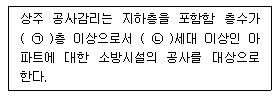
- ㉠8, ㉡300
- ㉠8, ㉠500
- ㉠16, ㉡300
- ㉠16, ㉡500
(정답률: 57%)
52. 화재, 재난ㆍ재해 그 밖의 위급한 사항이 발생한 경우 소방대가 현장에 도착할 때까지 관계인의 소방활동에 포함되지 않는 것은?
- 불을 끄거나 불이 번지지 아니하도록 필요한 조치
- 소방활동에 필요한 보호장구 지급 등 안전을 위한 조치
- 경보를 울리는 방법으로 사람을 구출하는 조치
- 대피를 유도하는 방법으로 사람을 구출하는 조치
(정답률: 79%)
53. 소방시설이 작동기능점검을 실시한 자는 그 점검결과를 몇 년간 자체 보관하여야 하는가?
- 1년
- 2년
- 3년
- 4년
(정답률: 79%)
54. 다음 중 자체소방대를 설치하여야 하는 사업소는?
- 위험물제조소
- 지정수량 3000배 이상의 위험물을 취급하는 제조소
- 지정수량 3000배 이상의 위험물을 보일러로 소비하는 일반취급소
- 지정수량 3000배 이상의 제 4류 위험물을 취급하는 일반취급소
(정답률: 66%)
55. 소방시설관리사시험의 응시자격은 소방성비 산업기사 자격을 취득 후 몇 년 이상의 소방실무경력이 필요한가?
- 2년
- 3년
- 5년
- 10년
(정답률: 62%)
56. 화재 또는 구조ㆍ구급이 필요한 상황을 허위로 1회 알린 자에게 부과하는 과태료는?
- 50만원
- 100만원
- 150만원
- 200만원
(정답률: 48%)
57. 소방기본법상 출동한 소방대원에게 폭행 또는 협박을 행사하여 화재진압ㆍ인면구조 또는 구급활동을 방해한 자에 대한 벌칙 기준은?(관련 규정 개정전 문제로 여기서는 기존 정답인 4번을 누르면 정답 처리됩니다. 자세한 내용은 해설을 참고하세요.)
- 1년 이하의 징역 또는 1000만원 이하의 벌금
- 1년 이하의 징역 또는 1500만원 이하의 벌금
- 3년 이하의 징역 또는 1500만원 이하의 벌금
- 5년 이하의 징역 또는 3000만원 이하의 벌금
(정답률: 67%)
58. 소방본부장 또는 소방서장은 화재경계지구 안의 관계인에 대하여 소방상 필요한 훈련 또는 교육을 실시할 경우 관계인에게 훈련 또는 교육 며칠 전까지 그 사실을 통보해야 하는가?
- 3일
- 5일
- 7일
- 10일
(정답률: 57%)
59. 건축허가등의 동의대상물이 아닌 것은?(2017년 08월 16일 개정된 규정 적용됨)
- 연면적 100m2인 학교
- 연면적 150m2인 노유자시설
- 지하층이 있는 건축물로서 바닥면적이 150m2인 층이 있는 것
- 주차장으로 사용되는 층 중 바닥면적리 200m2인 층이 있는 시설
(정답률: 61%)
60. 3년 이하의 징역 또는 1천500만원 이하의 벌금에 해당하지 않는 것은?
- 소방시설관리사증을 다른 자에게 빌려준 자
- 관리업의 등록을 하지 아니하고 영업을 한 자
- 소방용품의 형식승인을 얻지 아니하고 소방용품을 제조한 자
- 소방용품 형식승인을 얻지 아니하고 소방용품을 수입한 자
(정답률: 52%)
4과목: 소방기계시설의 구조 및 원리
61. 제연설비의 설치 시 아연도금강판으로 제작된 배출 풍도 단면의 긴 변이 400mm 와 2500mm 일 때 강판의 최소 두께는 각각 몇 mm 인가?
- 0.4, 1.0
- 0.5, 1.0
- 0.5, 1.2
- 0.6, 1.2
(정답률: 61%)
62. 완강기의 구성요소가 아닌 것은?
- 디딤판
- 조속기
- 로프
- 벨트
(정답률: 75%)
63. 고발포용 고정포방출구의 팽창비율로 옳은 것은?
- 팽창비 10 이상 20 미만
- 팽창비 20 이상 50 미만
- 팽창비 50 이상 100 미만
- 팽창비 80 이상 1000 미만
(정답률: 68%)
64. 분말소화설비의 배관에 대한 설치기준으로 틀린 것은?
- 동관을 사용하는 경우 최고사용압력의 1.5배 이상의 압력에 견딜 수 있어야 한다.
- 배관은 전용배관으로 한다.
- 밸브류는 개폐위치를 표시한 것으로 한다.
- 축압식의 경우 20℃에서 압력이 2.5MPa 이상 4.2MPa 이하인 것에 있어서는 압력배관용 탄소강판 중 이음이 없는 스케줄 20 이상을 사용한다.
(정답률: 61%)
65. 대형소화기를 설치하는 경우 특정소방대상물의 각 부분으로부터 1개의 소화기까지의 보행거리는 몇 m이내로 배치하여야 하는가?
- 10
- 20
- 30
- 40
(정답률: 79%)
66. 물분무소화설비를 설치하는 차고, 주차장의 배수성비기준에 관한 설명으로 옳은 것은?
- 차량이 주차하는 장소의 적당한 곳에 높이 11cm 이상의 경계턱으로 배수구를 설치할 것
- 길이 50m 이하마다 접수관, 소화피트 등 기름분리장치를 설치할 것
- 차량이 주차하는 바닥은 배수구를 향하여 1/100 이상의 기울기를 유지할 것
- 배수설비는 가압송수장치 최대송수능력의 수량을 유효하게 배수할 수 있는 크기 및 기울기로 할 것
(정답률: 71%)
67. 지하층에 설치하는 피난기구로 옳게 짝지어진 것은?
- 피난사다리, 피난용트랩
- 피난용트랩, 구조대
- 피난사다리, 다수인 피난장비
- 피난용트랩, 다수인 피난장비
(정답률: 64%)
68. 할로겐화합물소화설비의 화재안전기준 중 할론 1301 축압식 저장용기의 충전비로서 옳은 것은?
- 0.51 이상 0.67 미만
- 0.67 이상 2.75 이하
- 0.7 이상 1.4 이하
- 0.9 이상 1.6 이하
(정답률: 58%)
69. 다음 중 물분무소화설비의 설치장소로 가장 적합한 곳은?
- 칼륨과 나트륨 분말의 저장창고
- 금수성물질 저장창고
- 유리고로가 가동되는 장소
- 케이블 트레이나 케이블 덕트가 지나가는 공동구
(정답률: 64%)
70. 배기를 위한 개구부가 없는 경우 지하층이나 무창층 또는 밀폐된 거실로서 그 바닥면덕이 20m2미만인 장소에서도 사용 가능한 소화기는?
- 할론 1211 소화기
- 할론 1301 소화기
- 이상화탄소 소화기
- 할론2402 소화기
(정답률: 62%)
71. 정격토출량이 300 ℓ/min 인 옥내소화전설비 펌프의 성능시험배관 유량계의 유량측정범위로 가장 적합한 것은?
- 200 ℓ/min ~ 300 ℓ/min
- 200 ℓ/min ~ 400 ℓ/min
- 200 ℓ/min ~ 500 ℓ/min
- 200 ℓ/min ~ 600 ℓ/min
(정답률: 58%)
72. 다음 중 스프링클러설비의 헤드의 종류가 폐쇄형헤드가 아닌 것은?
- 습식 방식
- 건식 방식
- 준비작동식 방식
- 일제살수식 방식
(정답률: 74%)
73. 전동기펌프를 사용하는 스프링클러설비 가압소수장치의 정격토출압력은 하나의 헤드선단에서 얼마인가?
- 0.1MPa 이상 0.7MPa 이하
- 0.1MPa 이상 1.2MPa 이하
- 0.7MPa 이상 1.2MPa 이하
- 0.17MPa 이상 1.2MPa 이하
(정답률: 49%)
74. 다음 중 스프링클러소화설비의 펌프와 토출측의 체크밸브 사이의 입상관에 설치되는 것은?
- 압력계
- 진공계
- 스트레이너
- 후드밸브
(정답률: 71%)
75. 상수도소화용수설비는 호칭지름 최소 몇 mm 이상의 수도배관에 접속하여 설치하여야 하는가?
- 65
- 75
- 80
- 100
(정답률: 60%)
76. 전역방출방식 이산화탄소소화설비의 저압식 분사헤드 방축압력은 몇 MPa 인가?
- 0.3
- 0.6
- 1.⑤
- 2.1
(정답률: 46%)
77. 제연구역으로부터 공기가 누설하는 출입문의 누설 틈새면적을 식 A=(L/ℓ)×Ad로 산출할 때 각 출입문의 ℓ과 Ad의 수치가 틀린 것은? (단, A: 출입문의 틈새(m2), L:출입문 틈새의 길이(m), ℓ:표준 출입문의 틈새 길이(m), Ad:표준 출입문의 누설면적(m2)이다.)
- 외여닫이문 : ℓ=6.5
- 쌍여닫이 문: ℓ=9.2
- 승강기 출입문 : ℓ=8.0
- 승강기 출입문 : Ad=0.06
(정답률: 45%)
78. 호스릴분말소화설비에 있어서 하나의 노즐당 필요한 소화약제별 기준량으로 틀린 것은?
- 제1종 분말 : 50kg 이상
- 제2종 분말 : 40kg 이상
- 제3종 분말 : 30kg 이상
- 제4종 분말 : 20kg 이상
(정답률: 64%)
79. 포소화설비의 약제 혼합방식 중 펌프와 발포기의 중간에 설치된 벤추리관의 벤추리 작용에 따라 포 소화약제를 혼입ㆍ혼합하는 방식은?
- 펌프 푸로포셔너 방식
- 라인 푸로포셔너 방식
- 프레져 푸로포셔너 방식
- 프레져저사이드 프로포셔너 방식
(정답률: 67%)
80. 다음 중 연결송수관설비를 건식으로 설치하는 경우의 밸브 설치순서로 옳은 것은?
- 송수구→자동배수밸브→체크밸브→자동배수밸브
- 송수구→체크밸브→자동배수밸브→체크밸브
- 송수구→체크밸브→자동배수밸브→개폐밸브
- 송수구→자동배수밸브→체크밸브→개폐밸브
(정답률: 74%)